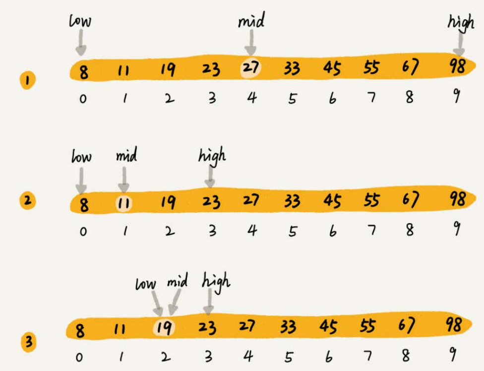
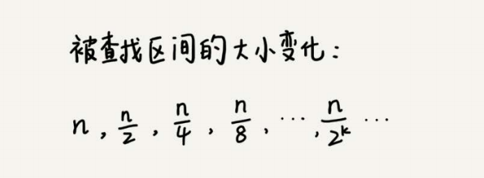
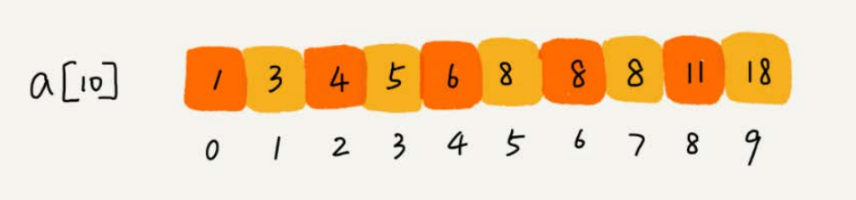

二分查找（Binary Search）
1.无处不在的二分查找思想
二分查找是一种非常简单易懂的快速查找算法，生活中到处可见。
举一个例子，假设只有10个订单，订单金额分别是： 8， 11， 19， 23， 27， 33， 45， 55， 67， 98。从中查找到金额等于19元的订单。
利用二分思想，每次都与区间的中间数据比对大小，缩小查找区间的范围。

二分查找针对的是一个有序的数据集合，查找思想有点类似分治思想。每次都通过跟区间的中间元素对比，将待查找的区间缩小为之前的一半，直到找到要查找的元素，或者区间被缩小为0。
2.O(logn)惊人的查找速度
二分查找是一种非常高效的查找算法。
假设数据大小是n，每次查找后数据都会缩小为原来的一半，也就是会除以2。最坏情况下，直到查找区间被缩小为空，才停止。

可以看出来，这是一个等比数列。其中n/2k=1时， k的值就是总共缩小的次数。而每一次缩小操作只涉及两个数据的大小比较，所以，经过了k次区间缩小操作，时间复杂度就是O(k)。通过n/2k=1，可以求得k=log2n，所以时间复杂度就是O(logn)。
3.二分查找的实现
简单的二分查找并不难写，注意这里的“简单”二字
最简单的情况就是有序数组中不存在重复元素，在其中用二分查找值等于给定值的数据。
1 | int bsearch(std::vector<int>& nums, int value) { |
着重强调容易出错的三个地方：
- 循环退出条件：注意是
low<=high，而不是low<high。 - mid的取值：
mid=(low+high)/2这种写法是有问题的。因为如果low和high比较大的话，两者之和就有可能会溢出。改进的方法是将mid的计算方式写成low+(high - low)/2。更进一步，如果要将性能优化到极致的话，可以将这里的除以2操作转化成位运算low+((high-low)>>1)。因为相比除法运算来说，计算机处理位运算要快得多。 - low和high的更新：
low=mid+1，high=mid-1。注意这里的+1和-1，如果直接写成low=mid或者high=mid，就可能会发生死循环。比如，当high=3， low=3时，如果a[3]不等于value，就会导致一直循环不退出。
二分查找递归代码的实现
1 | int bsearch_internally(std::vector<int>& nums, int low, int high, int value) { |
4.二分查找变形问题
注意：以下示例是从小到大排列为前提的
4.1 查找第一个值等于给定值的元素
比如下面这样一个有序数组，其中，a[5]，a[6]，a[7]的值都等于8，是重复的数据。希望查找第一个等于8的数据，也就是下标是5的元素。

如果用简单二分查找的代码实现，首先拿8与区间的中间值a[4]比较， 8比6大，于是在下标5到9之间继续查找。下标5和9的中间位置是下标7， a[7] 正好等于8，所以代码就返回了。
1 | int bsearch_first(std::vector<int>& nums, int value) { |
nums[mid]跟要查找的value的大小关系有三种情况：大于、小于、等于。对于nums[mid]>value的情况，需要更新high= mid-1；对于nums[mid]<value的情况，需要更新low=mid+1。
nums[mid]=value时，a[mid]就是要找的元素。但是，如果求解的是第一个值等于给定值的元素，当nums[mid]等于要查找的值时，就需要确认一下这个nums[mid]是不是第一个值等于给定值的元素。
重点看if((mid == 0) || (nums[mid - 1] != value))。如果mid等于0，那这个元素已经是数组的第一个元素，那它肯定是要找的；如果mid不等于0，但nums[mid]的前一个元素nums[mid-1]不等于value，那也说明nums[mid]就是要找的第一个值等于给定值的元素。
如果经过检查之后发现nums[mid]前面的一个元素nums[mid-1]也等于value，那说明此时的nums[mid]肯定不是要查找的第一个值等于给定值的元素。那就更新high=mid-1，因为要找的元素肯定出现在[low,mid-1]之间。
4.2 查找最后一个值等于给定值的元素
1 | int bsearch_last(std::vector<int>& nums, int value) { |
重点看 if((mid == n -1) || (nums[mid + 1] != value))。如果nums[mid]这个元素已经是数组中的最后一个元素了，那它肯定是要找的；如果nums[mid]的后一个元素nums[mid+1]不等于value，那也说明nums[mid]就是要找的最后一个值等于给定值的元素。
如果经过检查之后，发现nums[mid]后面的一个元素nums[mid+1]也等于value，那说明当前的这个nums[mid]并不是最后一个值等于给定值的元素。就更新low=mid+1，因为要找的元素肯定出现在[mid+1,high]之间。
4.3 查找第一个大于等于给定值的元素
在有序数组中，查找第一个大于等于给定值的元素。比如，数组中存储的这样一个序列： 3， 4， 6， 7， 10。如果查找第一个大于等于5的元素，那就是6。
1 | int bsearch_up(std::vector<int>& nums, int value) { |
如果nums[mid]小于要查找的值value，那要查找的值肯定在[mid+1,high]之间，所以，更新low=mid+1。
对于nums[mid]大于等于给定值value的情况，要先看下这个nums[mid]是不是要找的第一个值大于等于给定值的元素。如果nums[mid]前面已经没有元素，或者前面一个元素小于要查找的值value，那nums[mid]就是我们要找的元素。
如果nums[mid-1]也大于等于要查找的值value，那说明要查找的元素在[low,mid-1]之间，所以，将high更新为mid-1。
4.4 查找最后一个小于等于给定值的元素
最后一种二分查找的变形问题，查找最后一个小于等于给定值的元素。比如，数组中存储了这样一组数据： 3， 5， 6， 8， 9， 10。最后一个小于等于7的元素就是6
1 | int bsearch_down(std::vector<int>& nums, int value) { |
5.二分查找的局限性
二分查找的时间复杂度是**O(logn)，查找数据的效率非常高 **。不过，并不是什么情况下都可以用二分查找，它的应用场景是有很大局限性的。
- 二分查找依赖的是顺序表结构，简单点说就是数组。二分查找只能用在数据是通过顺序表来存储的数据结构上。如果你的数据是通过其他数据结构存储的，则无法应用二分查找。
- 二分查找针对的是有序数据。二分查找只能用在插入、删除操作不频繁，一次排序多次查找的场景中。针对动态变化的数据集合，二分查找将不再适用。
- 数据量太小不适合二分查找。只有数据量比较大的时候，二分查找的优势才会比较明显。
- 数据量太大也不适合二分查找。二分查找的底层需要依赖数组这种数据结构，而数组为了支持随机访问的特性，要求内存空间连续，对内存的要求比较苛刻。比如，有1GB大小的数据，如果希望用数组来存储，那就需要1G的连续内存空间。
6.总结
二分查找，一种针对有序数据的高效查找算法，它的时间复杂度是O(logn)。
二分查找的核心思想理解起来非常简单，有点类似分治思想。即每次都通过跟区间中的中间元素对比，将待查找的区间缩小为一半，直到找到要查找的元素，或者区间被缩小为0。但是二分查找的代码实现比较容易写错。你需要着重掌握它的三个容易出错的地方：循环退出条件、 mid的取值， low和high的更新。
二分查找虽然性能比较优秀，但应用场景也比较有限。底层必须依赖数组，并且还要求数据是有序的。对于较小规模的数据查找，直接使用顺序遍历就可以了，二分查找的优势并不明显。二分查找更适合处理静态数据，也就是没有频繁的数据插入、删除操作。
实际上，求“值等于给定值”的二分查找确实不怎么会被用到，二分查找更适合用在“近似”查找问题，在这类问题上，二分查找的优势更加明显。